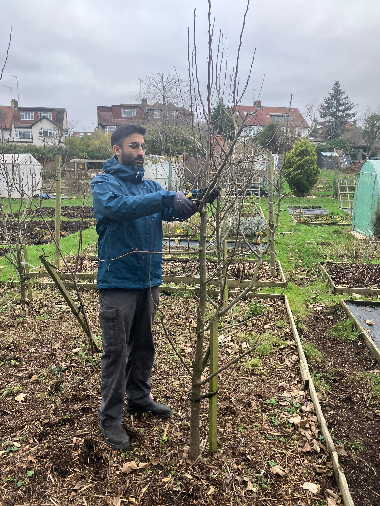

Garden Maintenance Services in Waltham Forest
I provide a plant-focussed garden maintenance service for domestic gardens. I work primarily in Waltham Forest, but will consider projects in nearby areas. I am a trained horticulturalist with a strong understanding of plants, soil, and garden design. I can help with:
If you want help with your garden but don't know where to start, I can offer a free consultation. Contact me to arrange a time that works for you.
Rates
I charge an hourly rate for garden maintenance work. For larger projects, I can provide a fixed quote based on the work required. I offer discounted rates for community gardening projects.
For larger jobs, I can bring in other gardeners to help with the project.
